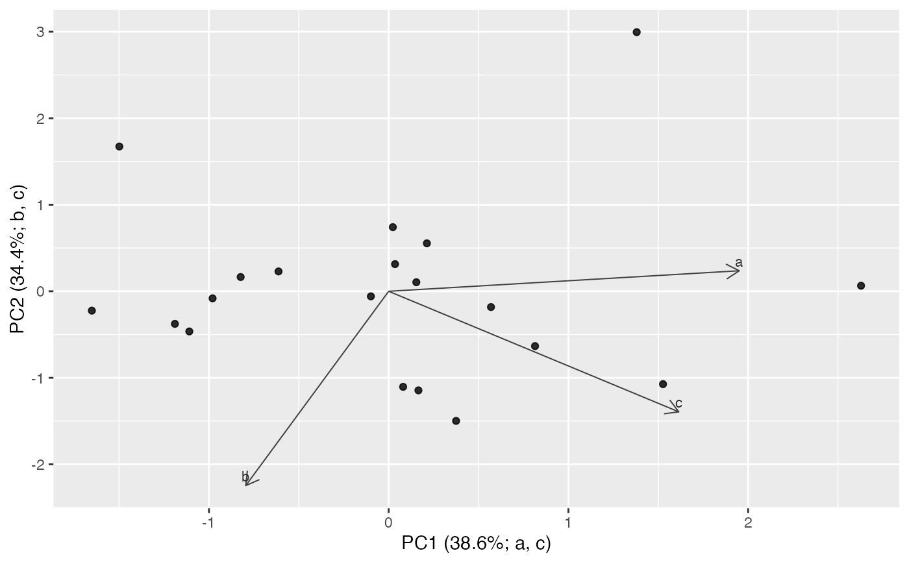

Plots the first two principal component score axes from terrain_pca().
Usage
plot_process_pca(
pca,
color_col = NULL,
shape_col = NULL,
label_loadings = TRUE,
loading_arrows = TRUE,
top_loadings = 3,
axis_labels = c("loadings", "variance", "plain"),
title = NULL,
subtitle = NULL,
caption = NULL
)Arguments
- pca
Output from
terrain_pca().- color_col
Optional score metadata column used for point color.
- shape_col
Optional score metadata column used for point shape.
- label_loadings
Logical. Label the largest loading vectors.
- loading_arrows
Logical. Draw loading arrows scaled into score space.
- top_loadings
Number of high-magnitude loading vectors to draw or label.
- axis_labels
Axis label style: include dominant loadings and variance, variance only, or plain component names.
- title, subtitle, caption
Plot text.
Examples
if (requireNamespace("ggplot2", quietly = TRUE)) {
df <- data.frame(a = rnorm(20), b = rnorm(20), c = rnorm(20))
plot_process_pca(terrain_pca(df))
}
